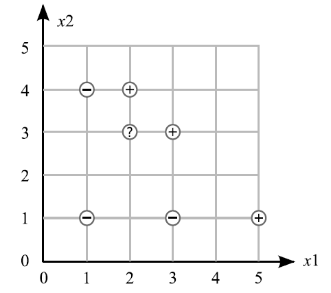

Linear perceptron is one of the simplest learning algorithms for a two-class classifier. Given a set of data points in d-dimensions, belonging to two classes, C1 and C2, the algorithm tries to find a linear separating hyper-plane between the samples of the two classes. If the samples are in one, two or three dimensions, the separating hyperplane would be a point, line or a plane respectively. The specific algorithm that we look into is a special case of a class of algorithms that uses gradient descent on a carefully defined objective function to arrive at a solution.

Assume that the samples of the two classes are linearly separable in the feature space. i.e., there exists a plane w.x+w0 = 0 such that all samples belonging to the first class are on one side of the plane, and all samples of the second class are on the opposite side. If such planes exist, the goal of the perceptron algorithm is to learn any one such plane, given the data points. Once we learn the plane, it will be easy to classify new points in the future, as the points on one side of the plane will result in a positive value for w.x+w0, while points on the other side will give a negative value.
Special Case: One dimensional feature vector
To understand the working of the algorithm, we first take the simplest case, where the samples are represented by a single feature (one-dimensional).

The high level goals of the experiment are:
- 1: To understand the working of linear perceptron learning algorithm.
- 2: To understand the effect of various parameters on the learning rate and convergence of the algorithm.
- 3: To understand the effect of data distribution on learnability of the algorithm.
- 4: To understand the implication of learning a constrained plane in d+1-dimensional space.



Data points are: Negative: (1, 1) (3, 1) (1, 4) Positive: (2, 4) (3, 3) (5, 1). Data points are classified as either +1 or -1. An unknown point is located at (2, 3)(Q 1-4).
Q1. Assume that the points are examined in the order given above, starting with the negative points and then the positive points. Simulate one iteration of the perceptron algorithm with a learning rate of 0.5 and an initial weight vector of (-15 5 3).
Q2. What is the equation of this line using the final weights from Question 1.
Q3. Is this line a linear separator of the data?
Q4. Using this line, what would be the predicted class of the unknown point (2, 3)? What is the margin of this point using the predicted class?
Q5. For which kind of problem is the Adaline algorithm the best ?
Q6. For which kind of problem is the Backpropagation algorithm the best ?
Q7. For which kind of problem is the Perceptron algorithm the best ?
Q8. What would happen if the output function in a multi-layer perceptron would be omitted; i.e. if the output would simply be the weighted sum of all input signals? Why is that simpler output not normally used in MLPs although it would simplify and accelerate the calculations for the backpropogation algorithm?
Q9. Consider a classical xor example(two same inputs give 1 and diffrent inputs give 0). How does the decision line look like? Is a
simple, one-layer perceptron able to realize this function?
Show by symbolic representations that the simple one-layer perceptron with two inputs
x1 and x2 as well as a threshold (theta) cannot realize the xor function.

.
Stage 1:
- Create a linearly separable dataset by clicking on the plane to add points to classes 1 and 2.
- Click start to initialize the weight vector (you may re-initialize by clicking on it again)
- Click the step button to see the stepping through the algorithm.
- Note number of iterations for convergence.
Stage 2:
Repeat the above procedure for the different datasets with varying amount of separation between them. Note down your observations.
Stage 3:
Study the effect of varying the decay rate with different amounts of separability.

- *Article on the Perceptron, at Wikipedia
- * Article on the MultiLayer Perceptron at Wikipedia
- * Lecture on the Perceptron Algorithm at CMU
- * Learning Applet on the Perceptron Learning Applet
- * Perceptron tutorials on Real Intelligence
- * Tutorials on multilayer Perceptron MultiLayer Perceptron